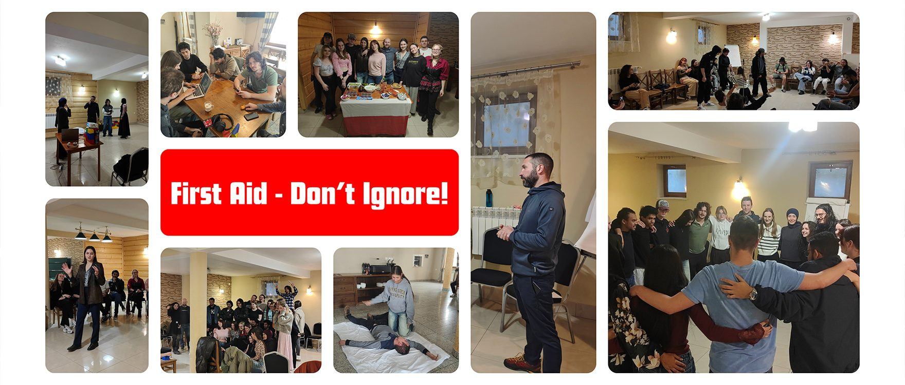
Erasmus+ Youth Exchange · Project story
First Aid – Don’t Ignore!
Disaster preparedness: how young people rethought emergency response through theatre.
- When
- 24–31 March 2026
- Where
- Murzasichle, Poland
- Who
- 33 participants
- From
- Poland, Hungary, Romania
- Subjects
- First aid, disaster preparedness
01
The mission
From 24 to 31 March 2026, Murzasichle became a centre for learning, cooperation and life-saving education through First Aid – Don’t Ignore!, an Erasmus+ Youth Exchange organised by Fundacja Patrz Globalnie. The project brought together 33 participants from Poland, Hungary and Romania.
Its main goal was to raise awareness of the importance of first aid, develop practical life-saving skills, and explore how non-formal education can be used to teach and share this knowledge. More than a typical exchange, it combined hands-on first aid training, forum theatre, intercultural learning and media creation.
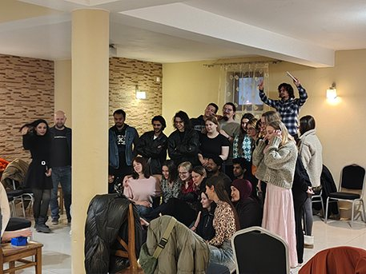
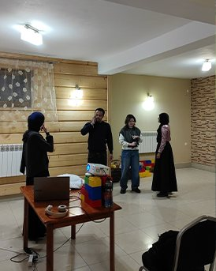
02
Life-saving skills
One of the most powerful experiences was the training led by a professional paramedic, where participants learned essential techniques such as CPR (cardiopulmonary resuscitation), using an AED (automated external defibrillator), and placing an unconscious person in the recovery position.
Using CPR dummies with feedback devices, participants practised chest compressions to the rhythm of a metronome, building proper technique and muscle memory. They also learned to assess emergencies, stay calm under pressure and work as a team.
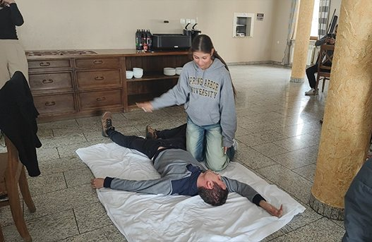
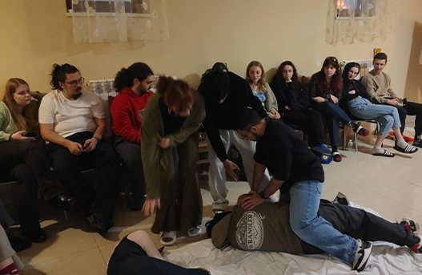
03
Ready for anything
Participants also explored how to respond to other dangerous situations, including injuries, panic attacks and environmental hazards. Through disaster scenarios and group discussions, they developed a deeper understanding of prevention, response, and the common mistakes people make in emergencies.
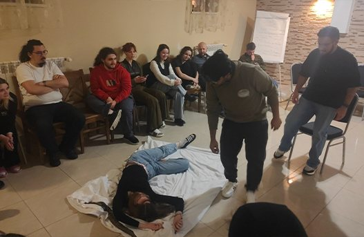
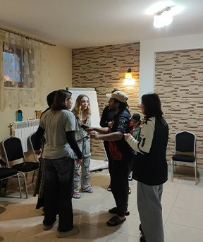
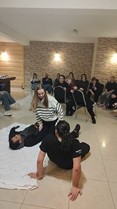
04
Forum theatre
A key element of the project was Forum Theatre. Participants created and acted out first aid scenarios, letting others step in, suggest solutions and help solve the problems shown in the scenes.
This reached its peak during a visit to Szkoła Polska – Zakopane, where participants performed their scenes for children aged 7 to 15. The interactive performances encouraged the students to volunteer and show how they would respond in an emergency, and teachers joined in too. By combining education with creativity, participants turned complex first aid knowledge into accessible, engaging experiences.
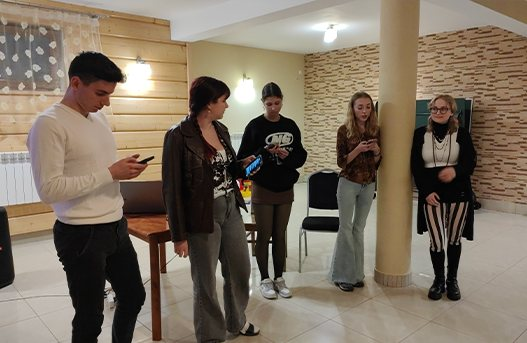
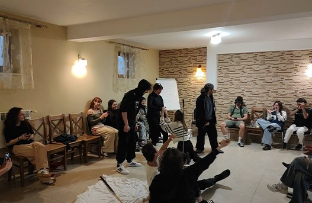
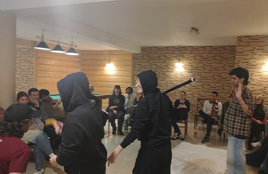
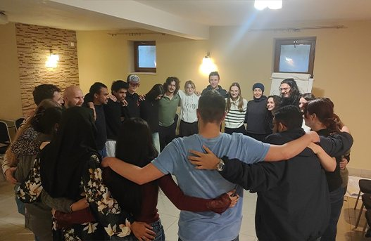
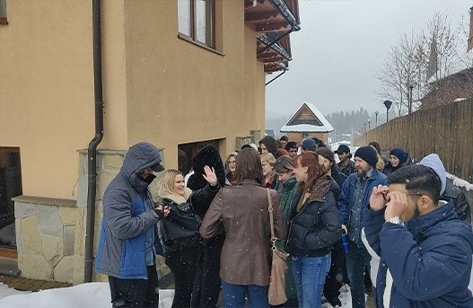
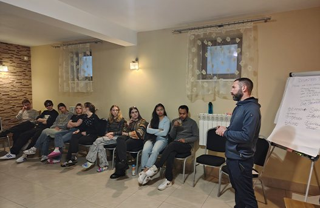
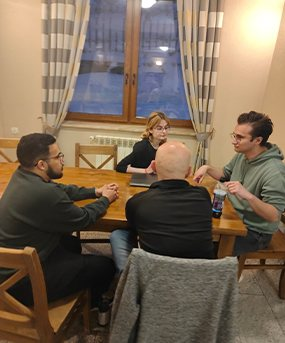
The week in Murzasichle · scroll sideways for more →
05
Sharing it further
Beyond the structured activities, the project focused on communication and community engagement. Participants created first aid podcasts, ran street interviews in Zakopane to explore public awareness of first aid, and reflected on how to share knowledge with a wider audience.
Intercultural exchange played a vital role too. Through cultural evenings organised by each national group, participants shared traditions, food, music and customs, building strong connections and mutual understanding.
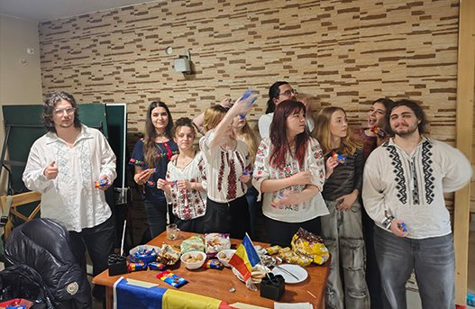
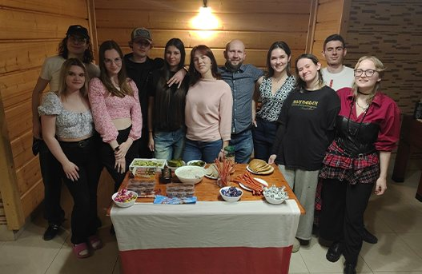
06
What we take home
The project ended with reflection sessions where participants recognised their personal growth. Many highlighted stepping out of their comfort zones, improving public speaking and communication, gaining confidence in handling emergencies, and developing a stronger sense of responsibility toward others.
By the end, participants were not only better prepared to respond to emergencies, but also empowered to spread awareness in their communities.
All resources and photos ↗ Back to all projects